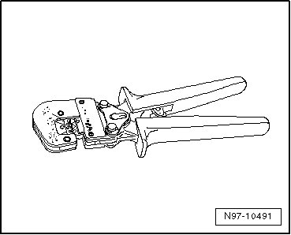
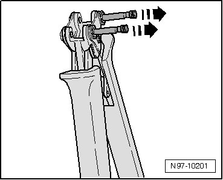
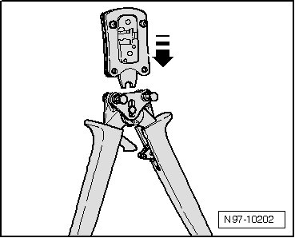
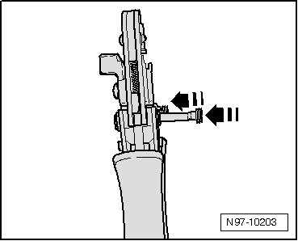

Crimping Pliers VAS 1978/1A VAS 1978/1A
Crimping Pliers VAS 1978/1A VAS 1978/1A
Crimping Pliers (VAS 1978/1A) or Crimping Pliers (Base Tool) (VAS 1978/1-2) together with Exchangeable Head 0.35 - 2.5mm/2 (VAS 1978/1-1) or Exchangeable Head 4.0 - 6.0mm/2 (VAS 1978/2A) from wiring harness repair kit is used to compress the crimp connections.

Compressing crimp connections using Crimp Pliers (VAS 1978/1A).
The following exchangeable heads can be obtained for Crimp Pliers (basic tool) (VAS 1978/1-2):
• Exchangeable head 0.35 mm2 - 2.5 mm2Crimping Pliers (Base Tool) (VAS 1978/1-1)
• Exchangeable head 4.0 mm2 - 6.0 mm2 Exchangeable Head 4.0 - 6.0mm/2 (VAS 1978/2A)
• Exchangeable Head for JPT-terminal (VAS 1978/9-1)
In conjunction with Exchangeable Head for JPT-terminal (VAS 1978/9-1), crimp pliers is used to crimp on terminals on to individual wires when repairing wiring cross-sections up to 0.35 mm.
Changing exchangeable head:
- Open crimp pliers completely.
- Disengage both locking pins - arrows - from crimp pliers basic tool.

- Insert the required exchangeable head from above - arrow - in crimp pliers basic tool.

- Lock exchangeable head by pressing in the pins - arrows - into crimp pliers basic tool.
